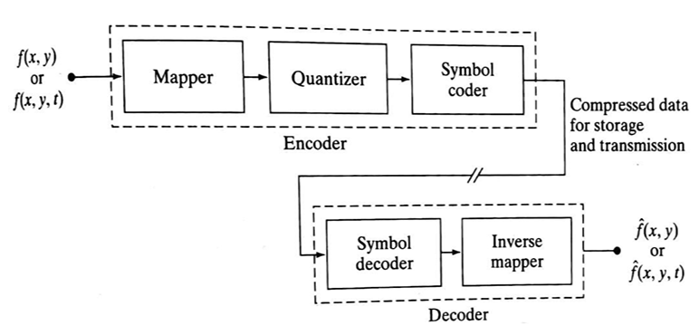
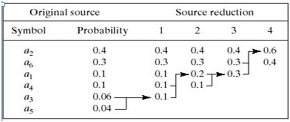
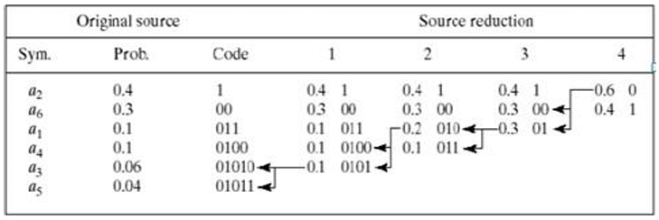
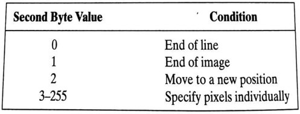
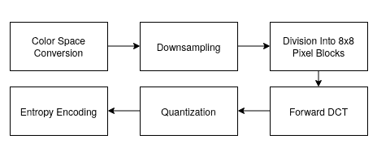

Introduction
Image compression is defined as the process of reducing the amount of data needed to
represent a digital image. This is done by removing the redundant data.
The objective of image compression is to decrease the number of bits required to store and transmit without any measurable loss of information.
Two types of digital image compression are:
- Lossless (or) Error – Free Compression
- Lossy Compression
Need for Data Compression:
- If data can be effectively compressed wherever possible, significant improvements in data throughput can be achieved.
- Compression can reduce the file sizes up to 60-70% and hence many files can be combined into one compressed document which makes the sending easier.
- It is needed because it helps to reduce the consumption of excessive resources such as hard disc space and transmission bandwidth.
- Compression can fit more data in small memory and thus it reduces the memory space required as well as the cost of managing data.
Image Compression Model
The following figure shows an image compression system is composed of two distinct functional components: an encoder and decoder. The encoder performs compression and decoder performs the complementary operation of decompression. Both operations can be performed in software. Input image is fed into the encoder, which creates a compressed representation of the input. When the compressed representation is presented to its complementary decoder, a reconstructed image is generated.

Compression Methods
Huffman coding
Provides a data representation with the smallest possible number of code symbols per source symbol (when coding the symbols of an information source individually) Huffman code construction is done in two steps:- Source reductions: Create a series of source reductions by ordering the probabilities of the symbols and then combine the symbols of lowest probability to form new symbols recursively.
This step is sometimes referred to as “building a Huffman tree” and can be done statistically.

Fig. 2 Huffman source reduction - Code assignment: When only two symbols remain, retrace the steps in 1 and assign a code bit to the symbols in each step. Encoding and decoding is done using these codes in a lookup table manner.

Fig. 3 Huffman code assignment procedure
- Source reductions: Create a series of source reductions by ordering the probabilities of the symbols and then combine the symbols of lowest probability to form new symbols recursively.
This step is sometimes referred to as “building a Huffman tree” and can be done statistically.
Run-length coding
Provides a data representation where sequences of symbol values of the same value are coded as “run-lengths”.- 1D – the image is treated as a row-by-row array of pixels
- 2D – blocks of pixels are viewed as source symbols
Code 2,11 6,14 9,17
Here compression is achieved by eliminating a simple form of spatial redundancy – groups of identical intensities. When there are few runs of identical pixels, run length encoding results in data expansion. The BMP file format uses a form of rum-length encoding in which image data is represented in two different modes:- Encoded mode – A two-byte RLE representation is used. The first byte specifies the number of consecutive pixels that have the color index contained in the second byte. The 8-bit color index selects the run’s intensity from a table of 256 possible intensities.
- Absolute mode – The first byte here is 0 and the second byte signals one of four possible conditions, as shown in below table.

Fig. 4 BMP absolute coding mode options. In this mode, the first byte of the BMP pair is 0 JPEG
JPEG stands for Joint Photographic Experts Group and is a lossy compression algorithm that results in significantly smaller file sizes with little to no perceptible impact on picture quality and resolution. A JPEG-compressed image can be ten times smaller than the original one. JPEG works by removing information that is not easily visible to the human eye while keeping the information that the human eye is good at perceiving.
Fig. 5 Block diagram of JPEG based compression
- Color Space Conversion: The image is converted from RGB to YCbCr, separating brightness (Y) from color (Cb, Cr). This allows more compression on color data, which the human eye is less sensitive to.
- Down sampling: Chrominance channels (Cb and Cr) are down-sampled (typically 4:2:0), reducing their resolution and file size with minimal visual impact.
- Block Division: The image is divided into 8×8 pixel blocks, and each block is processed independently.
- Forward DCT (Discrete Cosine Transform): Each 8×8 block is transformed into frequency components, represented as weight values for base patterns. No data is lost at this step.
- Quantization: Frequency data is divided by a quantization table and rounded, removing high-frequency details (mostly imperceptible), which reduces file size.
- Entropy Encoding: The quantized values are serialized in a zig-zag order, then compressed using Run-Length Encoding (RLE) followed by Huffman Coding — both lossless methods.
Sine and Cosine Transform-Based
Transform-based image compression techniques use mathematical transformations to convert image data from the spatial domain to the frequency domain. This transformation allows for efficient data representation, energy compaction, and easier elimination of redundancy. The most common transforms used are the Discrete Cosine Transform (DCT) and Discrete Sine Transform (DST).
-
Discrete Cosine Transform (DCT)
The Discrete Cosine Transform (DCT) is a mathematical technique used to transform an image from the spatial domain (pixels) to the frequency domain. It represents the image as a sum of cosine functions oscillating at different frequencies. The 2D DCT is particularly effective in compressing image data because most of an image's visual information is contained in a few low-frequency components. This is why DCT is the cornerstone of compression standards like JPEG.
- Mathematical Expression (2D-DCT)
For an N × N image block f(x, y), the 2D-DCT is defined as:
Where:
- C(k) = 1/√2 when k = 0, otherwise C(k) = 1
- x, y range from 0 to N−1
- u, v are frequency indices
-
Inverse DCT (2D)
Where:
- C(k) = 1/√2 when k = 0, otherwise C(k) = 1
- x, y = 0 to N−1
- F(u, v) are the DCT coefficients
-
Properties of DCT
- Real-valued and orthogonal
- High energy compaction (most energy is in low frequencies)
- Compression-friendly (most high-frequency components can be discarded)
- Widely used in JPEG, MPEG, H.264/AVC, and HEVC
-
Compression Process using DCT
- Divide the image into 8x8 or 16x16 blocks.
- Apply 2D DCT to each block.
- Quantize the DCT coefficients (lossy step).
- Reorder coefficients using zigzag scanning.
- Use entropy encoding (e.g., Huffman or arithmetic coding).
- Mathematical Expression (2D-DCT)
- Discrete Sine Transform (DST)
The DST uses sine functions to transform data. It is less commonly used than DCT but useful in certain applications, especially where boundary values are expected to be zero (odd symmetry).
- Mathematical Expression (DST-I)
Where:
- xn is the input signal,
- Xk is the transformed output,
- N is the number of points,
- n, k = 1 to N
- Properties of DST
- Real-valued and orthogonal
- Useful in solving partial differential equations and physical modeling
- Does not assume even symmetry (unlike DCT)
- Boundary values are zero (odd symmetry)
- Mathematical Expression (DST-I)
- Comparison: DCT vs DST
Feature DCT DST Usage Basis Function Cosine Sine DCT in JPEG, DST in modeling Symmetry Assumption Even Odd (zero boundaries) Depends on application Energy Compaction High Moderate to High Better in DCT Computational Complexity Low (efficient) Slightly higher DCT widely supported
-
Discrete Cosine Transform (DCT)